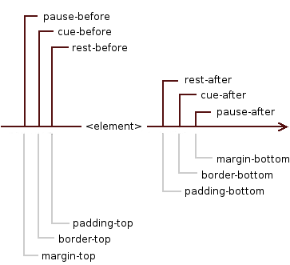

Abstract
CSS (Cascading Style Sheets) is a language for describing the
rendering of HTML and XML documents on screen, on paper, in speech,
etc. CSS defines aural properties that give control over rendering
XML to speech. This draft describes the text to speech properties
proposed for CSS level 3. These are designed for match the model
described in the Speech Synthesis Markup Language (SSML) Version 1.0
[SSML10]
The CSS3 Speech Module is a community effort and if you would
like to help with implementation and driving the specification
forward along the W3C Recommendation track, please contact the
editors.
Status of this document
This section describes the status of this document at the time
of its publication. Other documents may supersede this document. A
list of current W3C publications and the latest revision of this
technical report can be found in the W3C technical reports index at
http://www.w3.org/TR/.
This document is a draft of one of the "modules" for the
upcoming CSS3 specification.
This document is a working draft of the CSS working group which is part of the
style activity (see summary). It has been developed in
cooperation with the Voice Browser working
group (W3C
Members only).
The CSS working group would like to receive feedback: comments
on this draft may be sent to the editors, discussion takes place on
the (archived)
public mailing list www-style@w3.org
(see instructions).
W3C Members can also send comments directly to the CSS working
group.
This document was produced under the 24 January 2002 CPP
as amended by the W3C Patent
Policy Transition Procedure. Patent disclosures relevant to CSS
may be found on the Working Group's public patent disclosure
page.
Candidate Recommendation Exit Criteria
For this specification to exit the CR stage, the following
conditions must be met:
There must be at least two interoperable implementations
for every feature. For the purposes of this criterion,
we define the following terms:
- feature
A section or subsection of the specification.
- interoperable
passing the respective test cases in the test suite, or,
if the implementation is not a web browser, equivalent tests.
Every relevant test in the test suite should have an equivalent
test created if such a UA is to be used to claim interoperability.
In addition if such a UA is to be used to claim interoperability,
then there must one or more additional UAs which can also pass
those equivalent tests in the same way for the purpose of
interoperability. The equivalent tests must be made publicly
available for the purposes of peer review.
- implementation
a user agent which:
- implements the feature.
- is available (i.e. publicly downloadable or available
through some other public point of sale mechanism). This is the
"show me" requirement.
- is shipping (i.e. development, private or unofficial
versions are insufficient).
- is not experimental (i.e. is intended for a wide audience
and could be used on a daily basis).
A minimum of six months of the CR period must have elapsed.
This is to ensure that enough time is given for any remaining major
errors to be caught.
The CR period will be extended if implementations are slow to
appear.
Features that were not in CSS1 will be dropped (thus reducing the
list of "all" features mentioned above) if two or more
interoperable implementations of those features are not found by
the end of the CR period.
Features will also be dropped if sufficient and adequate
tests (by judgment of the working group) have not been produced for
those features by the end of the CR period.
Table of contents
1. Dependencies on other
modules
This CSS3 module depends on the following other CSS3
modules:
It has non-normative (informative) references to the following
other CSS3 modules:
2. Introduction
The speech rendering of a document, already commonly used by
the blind and print-impaired communities, combines speech synthesis
and "auditory icons". Often such aural presentation occurs by
converting the document to plain text and feeding this to a
screen reader — software or hardware that simply
reads all the characters on the screen. This results in less
effective presentation than would be the case if the document
structure were retained. Style sheet properties for text to speech
may be used together with visual properties (mixed media) or as
an aural alternative to visual presentation.
Besides the obvious accessibility advantages, there are other
large markets for listening to information, including in-car use,
industrial and medical documentation systems (intranets), home
entertainment, and to help users learning to read or who have
difficulty reading.
When using voice properties, the canvas consists of a two
channel stereo space and a temporal space (you can specify audio
cues before and after synthetic speech). The CSS properties also
allow authors to vary the characteristics of synthetic speech
(voice type, frequency, inflection, etc.).
Examples:
h1, h2, h3, h4, h5, h6 {
voice-family: paul;
voice-stress: moderate;
cue-before: url(ping.au)
}
p.heidi { voice-balance: left; voice-family: female }
p.peter { voice-balance: right; voice-family: male }
p.goat { voice-volume: soft }
This will direct the speech synthesizer to speak headers in a
voice (a kind of "audio font") called "paul". Before speaking the
headers, a sound sample will be played from the given URL.
Paragraphs with class "heidi" will appear to come from the left
(if the sound system is capable of stereo), and paragraphs of class
"peter" from the right. Paragraphs with class "goat" will be played
softly.
3. The aural "box" model
The formatting model of CSS for aural media is based on a sequence
of sounds and silences that appear in a nested model which is
related to the visual box model; however the aural canvas is one-dimensional,
monolinear. For compatibility with the visual box model, we will call
it the aural "box" model.
The element is surrounded by, in this order, 'rest', 'cue'
and 'pause' properties - they can be thought of as aural equivalents
to 'padding', 'border' and 'margin' respectively.
It can be represented in the following way (including the equivalent
properties from the visual box model for clarification of relationships):

where element is the selected element to which the properties
from the Speech Module apply.
| Name: |
voice-volume |
| Value: |
<number> | <percentage> | silent | x-soft | soft |
medium | loud | x-loud | inherit |
| Initial: |
medium |
| Applies to: |
all elements |
| Inherited: |
yes |
| Percentages: |
refer to inherited value |
| Media: |
speech |
The 'voice-volume' refers to the amplitude of the waveform output by
the speech synthesiser. This may be mixed with other audio sources,
influencing the perceived loudness of synthetic speech relative
to these sources. Note that voice-volume does not apply to audio cues for which there is a separate means
to set the relative loudness.
Values have the following meanings:
- <number>
- An integer or floating point number in the range '0' to '100'.
'0' represents silence (the minimum level), and 100
corresponds to the maximum level. The volume scale is
linear amplitude.
- <percentage>
- Percentage values are calculated relative to the inherited
value, and are then clipped to the range '0' to '100'.
- silent,
x-soft,
soft,
medium,
loud, and
x-loud
- A sequence of monotonically non-decreasing volume levels. The value
of 'silent' is mapped to '0' and 'x-loud' is mapped to '100'.
The mapping of other values to numerical volume levels is implementation
dependent and may vary from one speech synthesizer to the next.
User agents should allow the level corresponding to '100' to be
set by the listener. No one setting is universally applicable;
suitable values depend on the equipment in use (speakers,
headphones), and the environment (in car, home theater, library)
and personal preferences.
| Name: |
voice-balance |
| Value: |
<number> | left | center | right | leftwards | rightwards | inherit |
| Initial: |
center |
| Applies to: |
all elements |
| Inherited: |
yes |
| Percentages: |
N/A |
| Media: |
speech |
The 'voice-balance' property refers to the balance between
left and right channels, and presumes a two channel (stereo) model
that is widely supported on consumer audio equipment.
Values have the following meanings:
- <number>
- An integer or floating point number between '-100' and '100'.
For '-100' only the left channel is audible. Simarly for '100' or
'+100' only the right channel is audible. For '0' both channels
have the same level, so that the speech appears to be coming from
the center.
- left
- Same as '-100'.
- center
- Same as '0'.
- right
- Same as '100' or '+100'.
- leftwards
- Moves the sound to the left, relative to the inherited voice
balance. More precisely, subtract 20 from the inherited value and
clip the resulting value to the range '-100' and '100'.
- rightwards
- Moves the sound to the right, relative to the inherited voice
balance. More precisely, add 20 to the inherited value and clip
the resulting value to the range '-100' and '100'.
Many speech synthesizers only support a single channel. The
voice-balance property can then be treated as part of a post
synthesis mixing step. This is where speech is mixed with other
audio sources. Note that unlike voice-volume, voice-balance
does apply to cues.
5. Speaking properties:
'speak'
| Name: |
speak |
| Value: |
none | normal | spell-out | digits | literal-punctuation |
no-punctuation | inherit |
| Initial: |
normal |
| Applies to: |
all elements |
| Inherited: |
yes |
| Percentages: |
N/A |
| Media: |
speech |
This property specifies whether text will be rendered aurally
and if so, in what manner. The possible values are:
- none
- Suppresses aural rendering so that the element requires no time
to render. Note, however, that descendants may override this value
and will be spoken. (To be sure to suppress rendering of an element
and its descendants, use the 'display' property [CSS3BOX]).
- normal
- Uses language-dependent pronunciation rules for rendering an
element and its children. Punctuation is not to be spoken, but
instead rendered naturally as various pauses.
- spell-out
- Spells the text one letter at a time (useful for acronyms and
abbreviations). In languages where accented characters are rare, it
is permitted to drop accents in favor of alternative unaccented
spellings. As as example, in English, the word "rôle" can
also be written as "role". A conforming implementation would thus
be able to spell-out "rôle" as "R O L E".
- digits
- Speak numbers one digit at a time, for instance, "twelve" would
be spoken as "one two", and "31" as "three one".
- literal-punctuation
- Similar to 'normal' value, but punctuation such as semicolons,
braces, and so on are to be spoken literally.
- no-punctuation
- Similar to 'normal' value but punctuation is not to be spoken
nor rendered as various pauses.
Note the difference between an element whose 'voice-volume'
property has a value of 'silent' and an element whose 'speak'
property has the value 'none'. The former takes up the same time as
if it had been spoken, including any pause before and after the
element, but no sound is generated. The latter requires no time and
is not rendered (though its descendants may be).
Speech synthesizers are knowledgeable about what is and what is
not a number. The speak property gives authors the means to control
how the synthesizer renders the numbers it discovers in the source
text, and may be implemented as a preprocessing step before passing
the text to the speech synthesizer.
| Name: |
pause-before |
| Value: |
<time> | none | x-weak | weak | medium | strong
| x-strong | inherit |
| Initial: |
implementation dependent |
| Applies to: |
all elements |
| Inherited: |
no |
| Percentages: |
N/A |
| Media: |
speech |
| Name: |
pause-after |
| Value: |
<time> | none | x-weak | weak | medium | strong
| x-strong | inherit |
| Initial: |
implementation dependent |
| Applies to: |
all elements |
| Inherited: |
no |
| Percentages: |
N/A |
| Media: |
speech |
These properties specify a pause or prosodic boundary to be
observed before (or after) an element or, if any 'cue-before' or
'cue-after' is specified, before (or after) these. Values have
the following meanings:
- <time>
- Expresses the pause in absolute time units (seconds and
milliseconds, e.g. "3s", "250ms"). Only positive values are allowed.
- none,
x-weak,
weak,
medium,
strong, and
x-strong
- These values may be used to indicate the prosodic strength of
the break in speech output. The synthesis processor may insert a
pause as part of its implementation of the prosodic break. The value
"none" indicates that no prosodic break boundary should be output,
and can be used to inhibit a prosodic break which the processor
would otherwise produce. The other values indicate monotonically
non-decreasing (conceptually increasing) break strength between
elements. The stronger boundaries are typically accompanied by pauses.
"x-weak" and "x-strong" are mnemonics for "extra weak" and "extra
strong", respectively. The breaks between paragraphs are typically
much stronger than the breaks between words within a sentence.
| Name: |
pause |
| Value: |
[ <'pause-before'> || <'pause-after'> ] |
inherit |
| Initial: |
implementation dependent |
| Applies to: |
all elements |
| Inherited: |
no |
| Percentages: |
N/A |
| Media: |
speech |
The 'pause' property is a shorthand for setting 'pause-before'
and 'pause-after'. If two values are given, the first value is
'pause-before' and the second is 'pause-after'. If only one value
is given, it applies to both properties.
Examples:
h1 { pause: 20ms } /* pause-before: 20ms; pause-after: 20ms */
h2 { pause: 30ms 40ms } /* pause-before: 30ms; pause-after: 40ms */
h3 { pause-after: 10ms } /* pause-before: unspecified; pause-after: 10ms */
Collapsing pauses
The pause defines the minimum distance of the aural "box" to the
aural "boxes" before and after it. Adjacent pauses should be merged
by selecting the strongest named break or the longest absolute
time interval. Thus "strong" is selected when comparing "strong"
and "weak", while "1s" is selected when comparing "1s" and "250ms".
We say that such pauses collapse.
A combination of a named break and time duration is treated
additively.
The following pauses collapse:
- The pause-after of an aural "box" and the pause-after of its last child,
provided the former has no rest-after and no cue-after.
- The pause-before of an aural "box" and the pause-before of its first child,
provided the former has no rest-before and no cue-before.
- The pause-after of an aural "box" and the pause-before of its next sibling.
- The pause-before and pause-after of an aural "box", if the the "box" has a
voice-duration of "0ms", no rest-before or rest-after, no
cue-before or cue-after and no content.
The pause-after of an element is always adjoining to the pause-before of its
next sibling.
The pause-before an element is adjoining to its first child's pause-before,
if the element has no cue-before nor rest-before.
The pause-after of an element is adjoining to its last child's pause-after,
if the element has no rest-after or cue-after.
An element's own pauses are adjoining if the 'voice-duration' property
is zero, and it has no rest, and it does not contain any content,
and all of its children's pauses (if any) are adjoining.
Editor's note: 'pause' has been re-defined, and has
been moved from between the element's contents and any 'cue' to outside
the 'cue' - this is not backwards compatible with the informative CSS2.1
Aural appendix.
| Name: |
rest-before |
| Value: |
<time> | none | x-weak | weak | medium | strong
| x-strong | inherit |
| Initial: |
implementation dependent |
| Applies to: |
all elements |
| Inherited: |
no |
| Percentages: |
N/A |
| Media: |
speech |
| Name: |
rest-after |
| Value: |
<time> | none | x-weak | weak | medium | strong
| x-strong | inherit |
| Initial: |
implementation dependent |
| Applies to: |
all elements |
| Inherited: |
no |
| Percentages: |
N/A |
| Media: |
speech |
These properties specify a rest or prosodic boundary to be observed
before (or after) speaking an element's content. Values have the following
meanings:
- <time>
- Expresses the rest in absolute time units (seconds and milliseconds,
e.g. "3s", "250ms"). Only positive values are allowed.
- none,
x-weak,
weak,
medium,
strong, and
x-strong
- These values may be used to indicate the prosodic strength of
the break in speech output. The synthesis processor may insert a
rest as part of its implementation of the prosodic break. The value
"none" indicates that no prosodic break boundary should be output,
and can be used to inhibit a prosodic break which the processor
would otherwise produce. The other values indicate monotonically
non-decreasing (conceptually increasing) break strength between words.
The stronger boundaries are typically accompanied by rests. "x-weak"
and "x-strong" are mnemonics for "extra weak" and "extra strong",
respectively.
As opposed to pause properties, the
rest is inserted between the element's content and any 'cue-before'
or 'cue-after' content. Adjacent rests are treated additively.
| Name: |
rest |
| Value: |
[ <'rest-before'> || <rest-after'> ] | inherit |
| Initial: |
implementation dependent |
| Applies to: |
all elements |
| Inherited: |
no |
| Percentages: |
N/A |
| Media: |
speech |
The 'rest' property is a shorthand for setting 'rest-before' and
'rest-after'. If two values are given, the first value is 'rest-before'
and the second is 'rest-after'. If only one value is given, it applies
to both properties.
| Name: |
cue-before |
| Value: |
<uri> [<number> | <percentage> | silent
| x-soft | soft | medium | loud | x-loud] | none | inherit |
| Initial: |
none |
| Applies to: |
all elements |
| Inherited: |
no |
| Percentages: |
apply to inherited value for voice-volume |
| Media: |
speech |
| Name: |
cue-after |
| Value: |
<uri> [<number> | <percentage> | silent
| x-soft | soft | medium | loud | x-loud] | none | inherit |
| Initial: |
none |
| Applies to: |
all elements |
| Inherited: |
no |
| Percentages: |
apply to inherited value for voice-volume |
| Media: |
speech |
Auditory icons are another way to distinguish semantic elements.
Sounds may be played before and/or after the element to delimit it.
Values have the following meanings:
- <uri>
- The URI must designate an auditory icon resource. If the URI
resolves to something other than an audio file, such as an image,
the resource should be ignored and the property treated as if it
had the value 'none'.
- none
- No auditory icon is specified.
- <number>
- An integer or floating point number in the range '0' to '100'.
'0' represents silence (the minimum level), and 100
corresponds to the maximum level. The volume scale is
linear amplitude.
- <percentage>
- Percentage values are calculated relative to the inherited
value of the 'voice-volume' property, and are then clipped to
the range '0' to '100'. By basing the percentage upon the
inherited value for voice-volume,
it is easy to adjust the relative loudness of cues compared to
synthetic speech for whatever volume setting has been provided
for that speech.
- silent,
x-soft,
soft,
medium,
loud, and
x-loud
- A sequence of monotonically non-decreasing volume levels.
The value of 'silent' is mapped to '0' and 'x-loud' is mapped
to '100'. The mapping of other values to numerical volume levels
is implementation dependent, but the intention is to match the
corresponding levels for voice-volume.
Examples:
a { cue-before: url(bell.aiff); cue-after: url(dong.wav) }
h1 { cue-before: url(pop.au) 80; cue-after: url(pop.au) 50% }
div.caution { cue-before: url(caution.wav) loud }
| Name: |
cue |
| Value: |
[ <'cue-before'> || <'cue-after'> ] | inherit |
| Initial: |
not defined for shorthand properties |
| Applies to: |
all elements |
| Inherited: |
no |
| Percentages: |
apply to inherited value for voice-volume |
| Media: |
speech |
The 'cue' property is a shorthand for setting 'cue-before'
and 'cue-after'. If two values are given the first value is
'cue-before' and the second is 'cue-after'. If only one value
is given, it applies to both properties.
The following two rules are equivalent:
h1 {cue-before: url(pop.au); cue-after: url(pop.au) }
h1 {cue: url(pop.au) }
If a user agent cannot render an auditory icon (e.g., the
user's environment does not permit it), we recommend that it
produce an alternative cue (e.g., popping up a warning, emitting
a warning sound, etc.)
Please see the sections on the ::before and ::after pseudo-elements
[SELECT] for information on other content
generation techniques.
| Name: |
mark-before |
| Value: |
<string> |
| Initial: |
none |
| Applies to: |
all elements |
| Inherited: |
no |
| Percentages: |
N/A |
| Media: |
speech |
| Name: |
mark-after |
| Value: |
<string> |
| Initial: |
none |
| Applies to: |
all elements |
| Inherited: |
no |
| Percentages: |
N/A |
| Media: |
speech |
The mark properties allow named markers to be attached to the
audio stream. For compatibility with SSML, this must conform to the
xsd:token
datatype as defined in XML Schema. Synthesis processors must do one
or both of the following when encountering a mark:
- Inform the hosting environment with the value of the mark's
name with information allowing the platform to retrieve the
corresponding position in the rendered output.
- When audio output of the SSML document reaches the mark,
issue an event that includes the required name attribute of
the element. The hosting environment defines the destination
of the event.
The mark properties have no audible effect on the speech
and instead just serve to mark points in the stream.
Values have the following meanings:
- <string>
- A string to be used as the name of the mark.
A good way of adding the marking properties could be by
means of using the attr() function.
Examples:
h1 {mark-before: "section"}
p {mark-before: attr(id) }
| Name: |
mark |
| Value: |
[ <'mark-before'> || <'mark-after'> ] |
| Initial: |
not defined for shorthand properties |
| Applies to: |
all elements |
| Inherited: |
no |
| Percentages: |
N/A |
| Media: |
speech |
The 'mark' property is a shorthand for setting 'mark-before'
and 'mark-after'. If two values are given the first value is
'mark-before' and the second is 'mark-after'. If only one value
is given, it applies to both properties.
The following two rules are equivalent:
div {mark-before: "start"; mark-after: "end" }
div {mark: "start" "end" }
| Name: |
voice-family |
| Value: |
[[<specific-voice> | [<age>] <generic-voice>]
[<number>],]* [<specific-voice> | [<age>]
<generic-voice>] [<number>] | inherit |
| Initial: |
implementation dependent |
| Applies to: |
all elements |
| Inherited: |
yes |
| Percentages: |
N/A |
| Media: |
speech |
The value is a comma-separated, prioritized list of voice family
names (compare with 'font-family'). Values have the
following meanings:
- <specific-voice>
- Values are specific instances (e.g., comedian, mary, carlos,
"valley-girl").
- <age>
- Possible values are 'child', 'young' and 'old'.
- <generic-voice>
- Values are voice families. Possible values are 'male',
'female' and 'neutral'.
- <number>
- Indicates a preferred variant of the other voice
characteristics (e.g. the second or next male voice). Possible
values are positive integers. '1' is the first of all available
voices and is equal to no numeric value.
Examples:
h1 { voice-family: announcer, old male }
p.part.romeo { voice-family: romeo, young male }
p.part.juliet { voice-family: juliet, female }
p.part.mercutio { voice-family: male 2 }
p.part.tybalt { voice-family: male 3 }
p.part.nurse { voice-family: child female }
Names of specific voices may be quoted, and indeed must be
quoted if any of the words that make up the name does not conform
to the syntax rules for identifiers [CSS3SYN].
Any whitespace
characters before and after the voice name are ignored. For
compatibility with SSML, whitespace characters are not permitted
within voice names.
The voice-family property is used to guide the selection of
the voice to be used for speech synthesis. The overriding priority
is to match the language specified by the xml:lang attribute
as per the XML 1.0
specification, and as inherited by nested elements until
overridden by a further xml:lang attribute.
If there is no voice available for the requested value of
xml:lang, the processor should select a voice that is closest
to the requested language (e.g. a variant or dialect of the
same language). If there are multiple such voices available,
the processor should use a voice that best matches the values
provided with the voice-volume property. It is an error if
there are no such matches.
| Name: |
voice-rate |
| Value: |
<percentage> | x-slow | slow | medium | fast | x-fast | inherit |
| Initial: |
implementation dependent |
| Applies to: |
all elements |
| Inherited: |
yes |
| Percentages: |
refer to default value |
| Media: |
speech |
This property controls the speaking rate. The default rate for
a voice depends on the language and dialect and on the personality
of the voice. The default rate for a voice should be such that it
is experienced as a normal speaking rate for the voice when
reading aloud text. Since voices are processor-specific, the
default rate will be as well.
- <percentage>
- Applies to the default speaking rate for each voice.
Thus 50% means half the normal rate for this voice.
- x-slow,
slow,
medium,
fast and
x-fast
- A sequence of monotonically non-decreasing speaking rates
that are implementation and voice specific.
| Name: |
voice-pitch |
| Value: |
<number> | <percentage> | x-low | low | medium
| high | x-high | inherit |
| Initial: |
medium |
| Applies to: |
all elements |
| Inherited: |
yes |
| Percentages: |
refer to inherited value |
| Media: |
speech |
Specifies the average pitch (a frequency) of the speaking voice.
The average pitch of a voice depends on the voice family. For
example, the average pitch for a standard male voice is around
120Hz, but for a female voice, it's around 210Hz.
Values have the following meanings:
- <number>
- A positive integer or floating point number that specifies
the average pitch of the speaking voice in Hertz.
- <percentage>
- Specifies a relative change to the inherited value.
- x-low, low,
medium, high,
x-high
- A sequence of monotonically non-decreasing pitch levels
that are implementation and voice specific.
ISSUE: should we also allow for relative
changes in terms of semitones as permitted by SSML?
| Name: |
voice-pitch-range |
| Value: |
<number> | <percentage> | x-low | low | medium
| high | x-high | inherit |
| Initial: |
implementation dependent |
| Applies to: |
all elements |
| Inherited: |
yes |
| Percentages: |
refer to inherited value |
| Media: |
speech |
Specifies variation in average pitch. The perceived pitch of a
human voice is determined by the fundamental frequency and
typically has a value of 120Hz for a male voice and 210Hz for a
female voice. Human languages are spoken with varying inflection
and pitch; these variations convey additional meaning and emphasis.
Thus, a highly animated voice, i.e., one that is heavily inflected,
displays a high pitch range. This property specifies the range over
which these variations occur, i.e., how much the fundamental
frequency may deviate from the average pitch.
Values have the following meanings:
- <number>
- An non-negative integer or floating point number indicating
pitch range in Hertz. Low ranges produce a flat, monotonic voice.
A high range produces animated voices.
- <percentage>
- Specifies a relative change to the inherited value.
- x-low,
low,
medium,
high and
x-high
- A sequence of monotonically non-decreasing pitch ranges
that are implementation and language dependent.
ISSUE: should we also allow for relative
changes in terms of semitones as permitted by SSML?
| Name: |
voice-stress |
| Value: |
strong | moderate | none | reduced | inherit |
| Initial: |
moderate |
| Applies to: |
all elements |
| Inherited: |
yes |
| Percentages: |
N/A |
| Media: |
speech |
Indicates the strength of emphasis to be applied. Emphasis
is indicated using a combination of pitch change, timing changes,
loudness and other acoustic differences) that varies from one
language to the next.
Values have the following meanings:
- none,
moderate and
strong
- These are monotonically non-decreasing in strength, with
the precise meanings dependent on language being spoken.
The value 'none' inhibits the synthesizer from emphasizing
words it would normally emphasize.
- reduced
- Effectively the opposite of emphasizing a word. For example,
when the phrase "going to" is reduced it may be spoken as
"gonna".
| Name: |
voice-duration |
| Value: |
<time> |
| Initial: |
implementation dependent |
| Applies to: |
all elements |
| Inherited: |
no |
| Percentages: |
N/A |
| Media: |
speech |
Allows authors to specify how long it should take to render
the selected element's content. This property overrides the 'voice-rate'
property. Values have the following meanings:
- <time>
-
Specifies a value in seconds or milliseconds for the desired
time to take to speak the element contents, for instance, "250ms",
or "3s". Only positive numbers are allowed.
| Name: |
phonemes |
| Value: |
<string> |
| Initial: |
implementation dependent |
| Applies to: |
all elements |
| Inherited: |
no |
| Percentages: |
N/A |
| Media: |
speech |
This allows authors to specify a phonetic pronunciation for the
text contained by the corresponding element.
@phonetic-alphabet
The default alphabet for the pronunciation string of the
'phonemes' property is the International Phonetic
Alphabet ("ipa"), corresponding to Unicode representations of the phonetic
characters developed by the International Phonetic Association
[IPA]. The phonetic alphabet can be explicitly specified
using the @phonetic-alphabet rule, for instance:
Example:
@phonetic-alphabet "ipa";
#tomato { phonemes: "t\0252 m\0251 to\028a " }
This will direct the speech synthesizer to replace the default
pronunciation by the corresponding sequence of phonemes in the
designated alphabet.
At most one @phonetic-alphabet rule may appear in style sheet and it
must appear, when used, before any occurrence of the 'phonemes' property.
ISSUE: we do not mention any other possible value
for @phonetic-alphabet. SSML 1.0 defines "ipa" to be the only valid
value - any other value should be added with the "x-" prefix. Do we
want to follow this? Or do we allow some other values? SAMPA comes
to my mind as a widely used ASCII alternative to IPA, but then: SAMPA
is language dependent, and it might be better to have X-SAMPA.
Inserted and replaced content
Sometimes, authors will want to specify a mapping from the
source text into another string prior to the application of the
regular pronunciation rules. This may be used for uncommon abbreviations
or acronyms which are unlikely to be recognized by the synthesizer.
The 'content' property can be
used to replace one string by another. In the following example,
the abbreviation is rendered using the content of the title
attribute instead of the element's content:
Example:
abbr { content: attr(title); }
...
<abbr title="World Wide Web Consortium">W3C</abbr>
This replaces the content of the selected element by the string
"World Wide Web Consortium".
In a similar way text-to-speach strings in a document can be
replaced by a previously recorded version:
Example:
.hamlet { content: url(gielgud.wav); }
...
<div class="hamlet">
To be, or not to be: that is the question:
</div>
If the format is supported, the file is available and the UA is
configured to do so, a recording of Sir John Gielgud's declamation
of the famous monologue will be played, otherwise the UA falls back
to render the text-to-speech with its own synthesizer.
Furthermore authors, or users in a user stylesheet, may want to
add some information to ease understanding the structure for non-visual
interaction with the document. They can do so by using the '::before'
and '::after' pseudo-elements that will be inserted between the
element's contents and the 'rest':
Example:
ul::before { content: "Start list: " }
ul::after { content: "List end. " }
li::before { content: "List item: " }
This inserts the string "Start list: " before a list and the string
"List item: " before each list item; likewise the string "List
end: " inserted after the list will inform the user that the list is
finished.
Different stylesheets can be used to define the level of verbosity
for additional information spoken by screen readers.
Detailed information can be found in the CSS3 Generated and
Replaced Content Module [CSS3GENCON].
Editor's note: The alphabet is specified via an
at-rule to avoid problems with inappropriate cascades that can
occur if the alphabet was set via a property.
ISSUE: should there be a CSS equivalent to the SSML <sub>
element? This gives the author the means to replace one string with
another as means to changing how something is spoken, e.g. "as-key"
for "ASCII". A possible solution is a new CSS property 'say-instead'
for instance:
say-instead: "as-key";
The drawback with this property is that it has to be applied to a
specific instance of an element and can't be used more generally.
In the longer term, the use of pronunciaton lexicons would provide a
better solution.
Appendix A — Changes from previous draft
The main changes have been to align the definitions with the
latest version of SSML as it reached W3C Recommendation status.
This effects voice-volume, voice-rate, voice-pitch, voice-pitch-range,
and voice-stress, where the enumerated logical values are now defined
as monotonically non-decreasing sequences to match SSML. Named
relative values such as louder and softer have been dropped
since they are not supported by SSML and can't be related through
percentage changes to the enumeration of logical values.
General overhaul to bring it in line with other CSS3 modules
The aural "box" model has been added.
Definitions of the values for the voice-volume property have been
slighly refined.
The 'pause' properties have been re-defined as to represent the break
between one element and the next one, outside the cues. Also, pause
collapsing has been explicitly defined.
The new properties 'rest-before', 'rest-after' and the shorthand
'rest' have been added.
The cue properties have been modified to allow the cue volume
to be set independently or relative to that of synthetic speech.
The mark-before, mark-after and mark properties have been
introduced to take advantage of SSML's mark feature, which is often
used for rewinding back to a marked point in an audio stream.
Definition of @phonetic-alphabet has been re-worded.
The interpret-as property has been temporarily dropped until the
Voice Browser working group has further progressed work on the SSML
<say-as> element.
References and Property index have been added
Appendix B — Profiles
TBD
Appendix C — Acknowledgements
The editors would like to thank the members of the W3C Voice
Browser and Cascading Style Sheets working groups for their
assistance in preparing this new draft. Special thanks to Ellen
Eide (IBM) for her detailed comments.
Appendix D — References
Normative references
- [CSS3CASCADE]
- Håkon Wium Lie. CSS3 module: Cascading and inheritance,
W3C Working Draft 19 February 2002 (Work in progress). URL: http://www.w3.org/TR/2002/WD-css3-cascade-20020219
- [CSS3TABLES]
- Bert Bos. CSS3 module: Tables, (forthcoming),
W3C working draft (Work in progress).
- [CSS3SYN]
- L. David Baron; et al. CSS3 module: Syntax, W3C Working
Draft 13 August 2003 (Work in progress). URL: http://www.w3.org/TR/2003/WD-css3-syntax-20030813
- [CSS3VAL]
- Håkon Wium Lie; Chris Lilley. CSS3 module: Values and
Units, W3C Working Draft, 13 July 2001 (Work in progress).
URL: http://www.w3.org/TR/2001/WD-css3-values-20010713
- [CSS3BOX]
- Bert Bos. CSS3 module: The box model,
W3C Working Draft 24 October 2002. URL: http://www.w3.org/TR/2002/WD-css3-box-20021024
- [CSS3GENCON]
- Ian Hickson. CSS3 Generated and Replaced Content Module,
W3C Working Draft 14 May 2003. URL: http://www.w3.org/TR/2003/WD-css3-content-20030514
- [IPA]
- International
Phonetic Association. See http://www.arts.gla.ac.uk/ipa/ipa.html
for the organization's website.
- [SELECT]
- Daniel Glazman; Tantek Çelik; Ian Hickson; et al.
Selectors, W3C Candidate Recommendation 13 November 2001. URL: http://www.w3.org/TR/2001/CR-css3-selectors-20011113
- [SSML10]
- Daniel C. Burnett, Mark R. Walker, Andrew Hunt; Speech
Synthesis Markup Language (SSML) Version 1.0, W3C Recommendation
7 September 2004. URL: http://www.w3.org/TR/2004/REC-speech-synthesis-20040907/
Appendix E — Property index
| Property |
Values |
Initial |
Applies to |
Inh. |
Percentages |
Media |
| voice-volume |
<number> | <percentage> | silent | x-soft | soft | medium | loud | x-loud | inherit |
medium |
all elements |
yes |
refer to inherited value |
speech |
| voice-balance |
<number> | left | center | right | leftwards | rightwards | inherit |
center |
all elements |
yes |
N/A |
speech |
| speak |
none | normal | spell-out | digits | literal-punctuation | no-punctuation | inherit |
normal |
all elements |
yes |
N/A |
speech |
| pause-before,
pause-after |
<time> | none | x-weak | weak | medium | strong | x-strong | inherit |
implementation dependent |
all elements |
no |
N/A |
speech |
| pause |
[ <'pause-before'> || <'pause-after'> ] | inherit |
implementation dependent |
all elements |
no |
N/A |
speech |
| rest-before,
rest-after |
<time> | none | x-weak | weak | medium | strong | x-strong | inherit |
implementation dependent |
all elements |
no |
N/A |
speech |
| rest |
[ <'rest-before'> || <'rest-after'> ] | inherit |
implementation dependent |
all elements |
no |
N/A |
speech |
| cue-before,
cue-after |
<uri> [<number> | <percentage> | silent | x-soft | soft | medium | loud | x-loud] | none | inherit |
none |
all elements |
no |
apply to inherited value for voice-volume |
speech |
| cue |
[ <'cue-before'> || <'cue-after'> ] | inherit |
not defined for shorthand properties |
all elements |
no |
apply to inherited value for voice-volume |
speech |
| mark-before,
mark-after |
<string> |
none |
all elements |
no |
N/A |
speech |
| mark |
[ <'mark-before'> || <'mark-after'> ] |
not defined for shorthand properties |
all elements |
no |
N/A |
speech |
| voice-family |
[[<specific-voice> | [<age>] <generic-voice>] [<number>],]* [<specific-voice> | [<age>] <generic-voice>] [<number>] | inherit |
implementation dependent |
all elements |
yes |
N/A |
speech |
| voice-rate |
<percentage> | x-slow | slow | medium | fast | x-fast | inherit |
implementation dependent |
all elements |
yes |
refer to default value |
speech |
| voice-pitch |
<number> | <percentage> | x-low | low | medium | high | x-high | inherit |
medium |
all elements |
yes |
refer to inherited value |
speech |
| voice-pitch-range |
<number> | x-low | low | medium | high | x-high | inherit |
implementation dependent |
all elements |
yes |
refer to inherited value |
speech |
| voice-stress |
strong | moderate | none | reduced | inherit |
moderate |
all elements |
yes |
N/A |
speech |
| voice-duration |
<time> |
implementation dependent |
all elements |
no |
N/A |
speech |
| phonemes |
<string> |
implementation dependent |
all elements |
no |
N/A |
speech |
The following properties are defined in other modules: